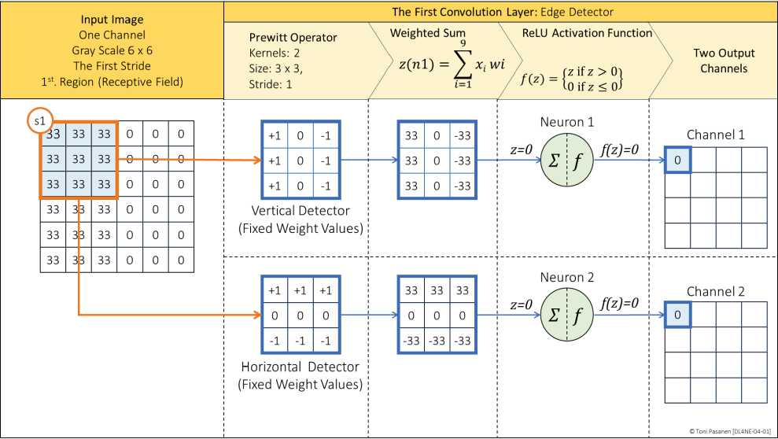
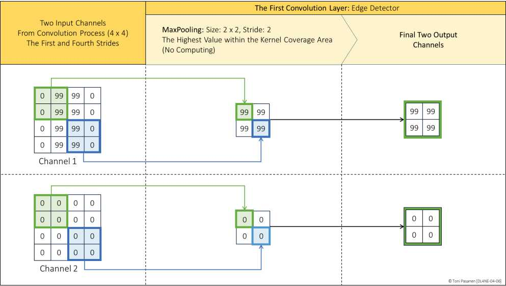

一张 300dpi、8×10英寸 RGB 图约 2000万像素×3通道≈6000万输入。若隐藏层 1000 神经元，仅一层就 600亿权重，放不下、算不动、还易过拟合。FNN 对位置变化也敏感：数字挪几像素就认不出。CNN 为图像而生。
用小卷积核（如 3×3）在图上滑动，每步做点乘求和，得到特征图（feature map）。不同核找不同特征：横边、竖边、角点。参数共享（同一核扫全图）大幅省参；平移不变性（目标挪位仍能命中）大幅提泛化。书 p95-100 第一个卷积层一步步演示。
在 2×2 窗口取最大值，尺寸减半，保留最强响应，抗微小位移，还省算力。典型结构：卷积→ReLU→池化→卷积→池化→全连接分类。


心算：224×224×3 输入，3×3×3核（1个）有多少参数？对比全连接1000神经元。